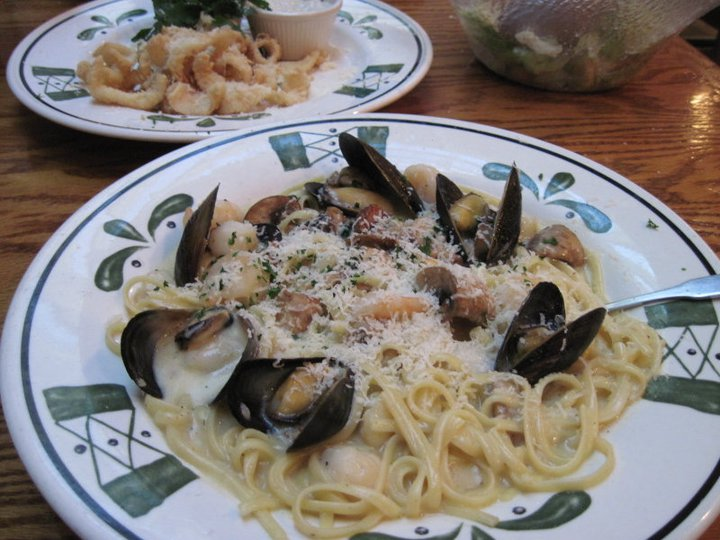

How to make Olive Garden's Seafood Portofino

Seafood Portofino | An Olive Garden Classic
This delectable pasta regime is a cult classic, with remnants of the world's most mouth watering seafood flavors, a rich parmiggiano sauce, and linguini noodles cooked al dente. The favored dish was recently removed from the Olive Garden menu, provoking outraged fans to form a Bring Back Olive Garden's Seafood Portofino Facebook Page.
Ingredients
- 2 oz Butter
- 2 oz Yellow Onion
- 2 oz Roux
- 8 fl oz Milk
- Half Pint Heavy Cream
- 1 oz Shrimp Stock
- 1 tsp Old Bay Seasoning
- 8 fl oz White Wine
- 10 Garlic Cloves
- 3 tbsp Olive Oil
- 1 lb Mushrooms
- 1 lb Linguine
- Fresh Parsley
- 2 lbs Shrimp
- 1 lb Crawfish
- 1 lb Scallops
- 60 Mussels
Steps
Portofino Sauce:
- Start by getting your ingredients ready. Dice the onion.
- *Make the roux (heat vegetable oil on medium/high, add flour, stir continuously until oil flour mixture browns). The amount of oil is about equal to the amount of roux required by the recipe. For instance, the original recipe calls for 2 oz of roux. So 4 tbsp oil and 4 tbsp white flour. Set aside.
- Melt Butter on medium heat. Add diced onion and garlic, stirring frequently, about 5 minutes.
- Add white wine. Turn up heat to high until boiling then back down to medium. Cook 5 minutes on medium.
- Stir in roux, shrimp stock, and Old Bay Seasoning. Cook 3 minutes.Stir in roux, shrimp stock, and Old Bay Seasoning. Cook 3 minutes.
- Add milk and heavy cream. Turn heat on high just until mixture starts to boil. Turn to medium/low, cover, and stir occasionally for 5 minutes. The sauce is now ready! It can be store for up to one week in the regrigerator.
Seafood Portofino:
- Heat oil in saute pan over medium flame. Put mushrooms inches Cook 2 minutes.
- Add mussels, and cook 30 seconds.
- Add shrimp, crawfish, and scallops. Cook until heated through, stirring.
- Add portofino sauce; cook until bubbling throughout.
- Move mushrooms and seafood to one side of pan. Add linguine to other side. Using tongs,coat pasta with sauce. (mussels should be open).
Bon Appétit!